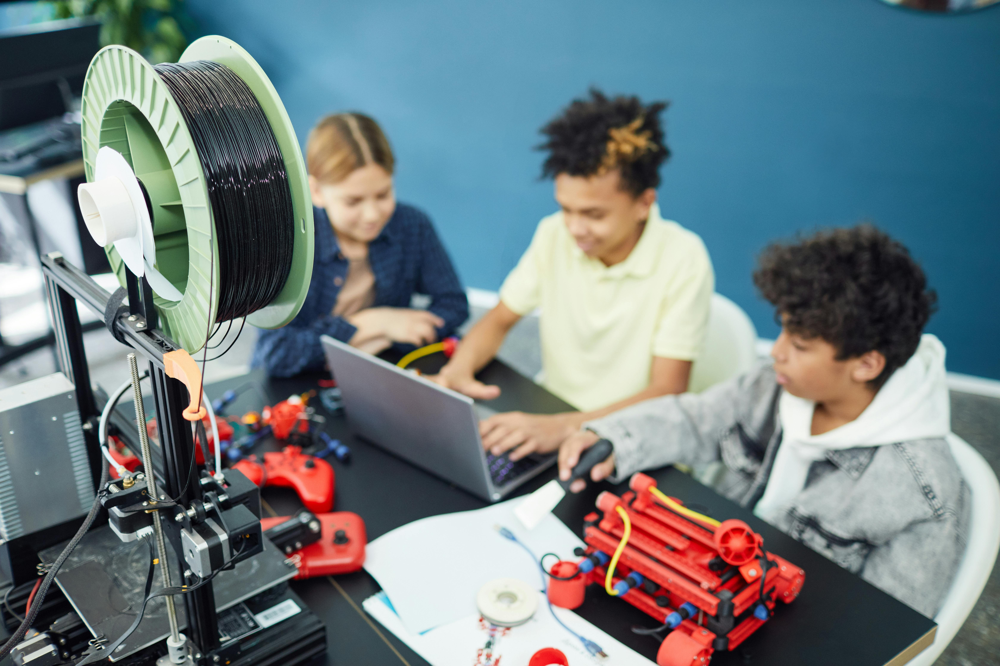

GEP Tech
Conectando talentos sub-representados ao mercado global de tecnologia e transformando vidas através do código.
Conhecer o demandante
Missão
Nossa missão é democratizar o acesso a carreiras de tecnologia de alto nível. Capacitamos jovens de comunidades periféricas com hard skills em desenvolvimento de software e skills de liderança, criando um pipeline de talentos diverso para o futuro do trabalho.
Visão
Nós da GEP Tech seremos a maior plataforma de mobilidade social através da tecnologia na América Latina até 2030. Comprometidos com o trabalho decente e inovação, construímos pontes sólidas entre o potencial humano inexplorado e as oportunidades da economia digital global.
Nossos Valores
Impacto Real
Medimos sucesso por vidas transformadas.
Inovação Inclusiva
Tecnologia feita por todos, para todos.
Comunidade
Crescemos juntos, ninguém fica para trás.
Nossos Líderes
Pedro Henrique, 19
SCRUM Master
Estudante de ADS, focado em desenvolvimento web e organização de equipes.
Guilherme Bezerra, 19
Product Owner (PO)
Especialista em alinhamento de equipe e desenvolvimento front-end.
Enrico Izzo, 18
Head do Time de Desenvolvimento
Focado em UX e desenvolvimento Full Stack.
Nossos Serviços
Capacitação em Tecnologia
Desenvolvimento web e mobile com foco em projetos reais, portfólio e aprendizagem aplicada.
Prototipação Digital
Criação de soluções web para demandas acadêmicas e institucionais, com atenção à experiência do usuário.
Consultoria de Produto
Apoio na organização de fluxos, interfaces e propostas digitais orientadas por impacto social.
Nossos Diferenciais
Entrega Ágil
Desenvolvimento com organização, ciclos curtos e acompanhamento transparente da evolução do projeto.
Comunicação e Parceria
Mais que código, buscamos entender a demanda e traduzir necessidades em experiências digitais claras.
Qualidade de Experiência
Protótipos pensados para consulta simples, boa leitura, responsividade e uso realista em diferentes telas.
Uma proposta acadêmica para Cursos de Extensão
O protótipo desenvolvido pela GEP Tech apresenta uma experiência mais simples e organizada para apoiar a publicação, consulta e solicitação de matrícula em Cursos de Extensão.
Ver origem da demanda